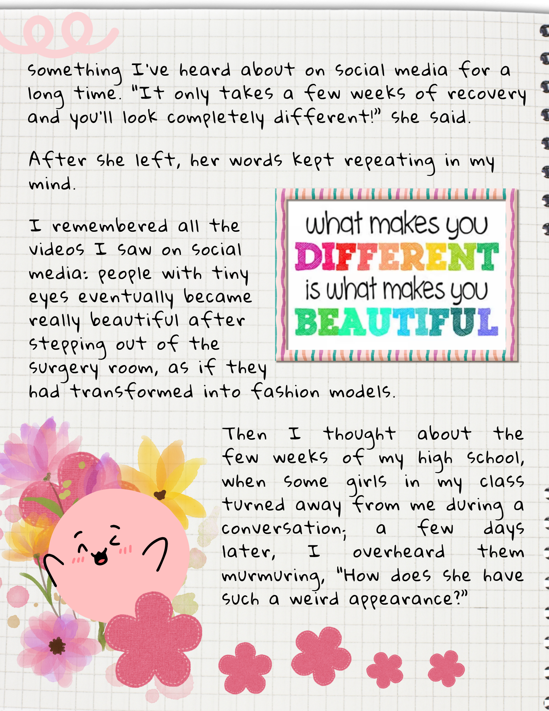
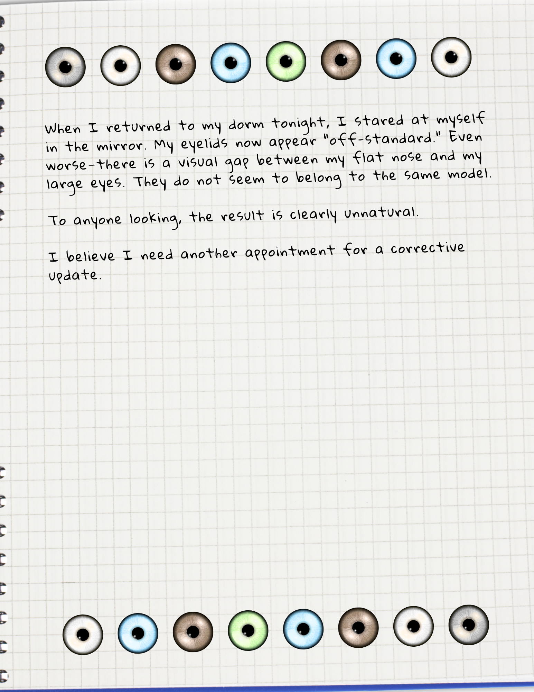
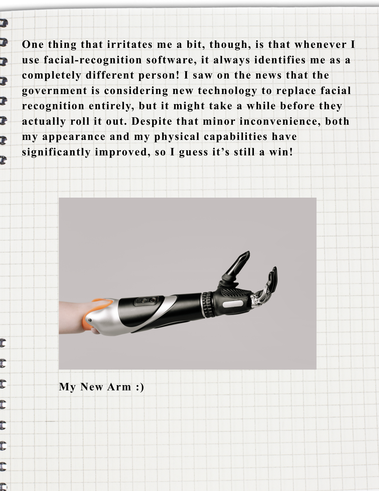
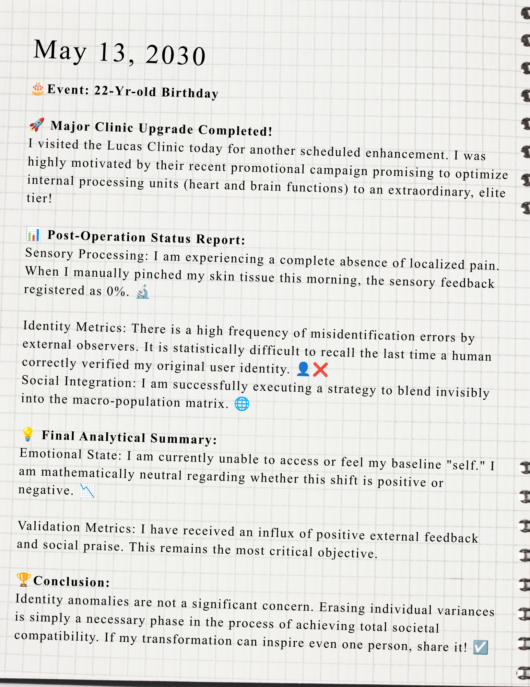

Post

I hope every parent and teenager sees this post before consulting a cosmetic surgeon. Please, protect yourself and your loved ones.
My daughter, Jane, had been getting cosmetic surgeries for years. At first, it was just a minor eyelid procedure when she was 18. I signed the consent form to approve it, never expecting the ongoing tragedy that would follow. She became completely obsessed with cosmetic surgery, and I couldn't stop her. By the time she was 22, she had replaced every single organ in her body—her hands, her skin, her brain, and her heart.
0% of her original DNA remains. ZERO. These surgeries took my daughter away from me.
I photographed these pages from her diary. I need parents and teenagers to see what really happened.
My daughter, Jane, had been getting cosmetic surgeries for years. At first, it was just a minor eyelid procedure when she was 18. I signed the consent form to approve it, never expecting the ongoing tragedy that would follow. She became completely obsessed with cosmetic surgery, and I couldn't stop her. By the time she was 22, she had replaced every single organ in her body—her hands, her skin, her brain, and her heart.
0% of her original DNA remains. ZERO. These surgeries took my daughter away from me.
I photographed these pages from her diary. I need parents and teenagers to see what really happened.




More pages from Jane's diary. Page after page, she wrote about every procedure — the pain, the recovery, the hope that the next surgery would finally make her happy.



The clinics never said no. Each time they told her it was routine. She trusted them. We all did.



Jane's final diary entry. By the end, she had replaced everything — her hand, her skin, her brain, her heart. These pages are all I have left of the daughter I knew. Please, learn from her story.

Replies